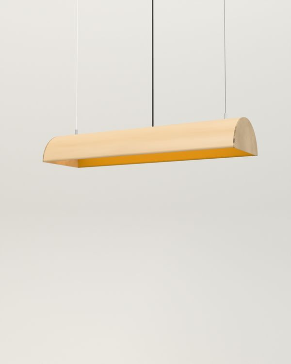
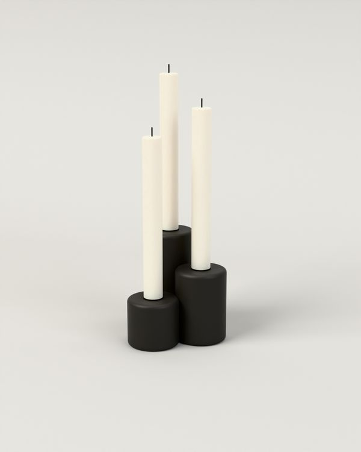

Tuotteet
Viisi tuotetta vuosilta 2021–2025. Niitä valmistaa kaksi tehdasta Päijät-Hämeessä. Tuotteita myyvät valmistajat ja niiden jälleenmyyjät, emme me.
Vako riippuvalaisin Lummevalo 2025

Pitkä riippuvalaisin ruokapöydän yläpuolelle. Kuori puristetaan kuudesta koivuviilusta Vesijärven Vanerilla.
- Materiaali
- Taivutettu koivuvaneri 4 mm, teräsvaijeri
- Mitat
- 640 × 190 × 100 mm, ripustus enintään 2 000 mm
- Valmistaja
- Lummevalo Oy, Orimattila
- Vuosi
- 2025
- Väri
- Koivu, sisäpinta okra tai musta
- Valonlähde
- LED 18 W, 2700 K, himmennettävä
- Paino
- 1,4 kg
Nuppi pöytävalaisin Lummevalo 2024

Himmennin on varjostimen päällä oleva koivunuppi. Kun sitä kiertää myötäpäivään, valo kirkastuu. Johto on 2,5 metriä, koska pistorasia on harvoin pöydän vieressä.
- Materiaali
- Jauhemaalattu teräs, sorvattu koivu
- Mitat
- Ø 220 mm, korkeus 440 mm
- Valmistaja
- Lummevalo Oy, Orimattila
- Vuosi
- 2024
- Väri
- Okra, harmaa, musta
- Valonlähde
- E27, enintään 8 W LED
Orsi seinähylly Okerkoski 2023

Hyllyn alla kulkee teräsorsi, johon voi ripustaa S-koukuilla kuppeja, pyyhkeitä tai avaimia. Hylly kiinnitetään seinään neljällä ruuvilla, ja kantavuus on 25 kg.
- Materiaali
- Massiivikoivu 24 mm, jauhemaalattu teräs, teräsorsi Ø 12 mm
- Mitat
- 800 × 200 × 180 mm
- Valmistaja
- Puusepäntehdas Okerkoski Oy, Hollola
- Vuosi
- 2023
- Väri
- Koivu ja musta, koivu ja okra
Kolo kynttilänjalka Lummevalo 2022

Kolme eri korkuista pylvästä yhtenä valukappaleena. Jalka painaa 1,9 kg, joten se ei kaadu, vaikka kynttilät ovat pitkiä.
- Materiaali
- Valurauta, vahattu
- Mitat
- 120 × 95 × 120 mm, kynttilät Ø 22 mm
- Valmistaja
- Lummevalo Oy, Orimattila
- Vuosi
- 2022
- Väri
- Musta
Pökkö jakkara Okerkoski 2021

Kolmijalkainen koivujakkara. Jalat on kiilattu istuimen läpi, ja niiden kulma on 9 astetta.
- Materiaali
- Massiivikoivu, öljyvaha
- Mitat
- Ø 340 mm, korkeus 450 mm
- Valmistaja
- Puusepäntehdas Okerkoski Oy, Hollola
- Vuosi
- 2021
- Väri
- Luonnonkoivu, okra, musta
- Paino
- 2,6 kg
Muut työt
Prototyypit, pienet sarjat ja yksittäiset tilaukset- 2026Vako 1200, pitkä versioLummevalo, Orimattila
- 2025Messuosaston kalusteet ja valaistus LummevalolleHelsinki
- 2024Naulakko Sarana, kolme prototyyppiäEi tuotannossa
- 2023Lukusalin pöytävalaisimet kunnankirjastoon, 14 kplPäijät-Häme
- 2022Pökön okra ja musta väri, uusi jalkasabluunaOkerkoski, Hollola
- 2021Baarijakkarat ravintolaan, 24 kplLahti
- 2020Tuoli Lepo, seitsemän prototyyppiäEi tuotannossa
- 2019Kahvilan pöydät ja hyllytLahti
- 2018Vaneripuristin verstaalleLiimakatu 4, Lahti